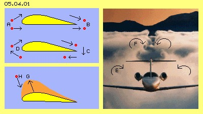
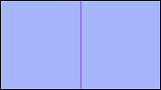
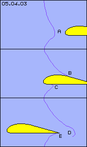
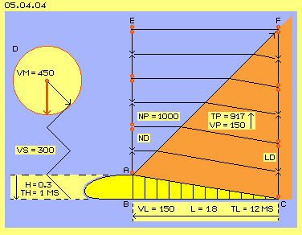
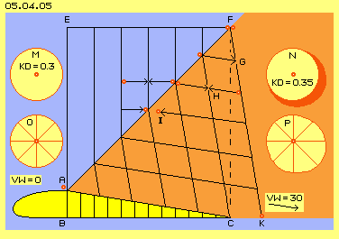
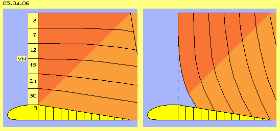
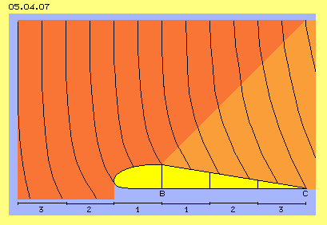
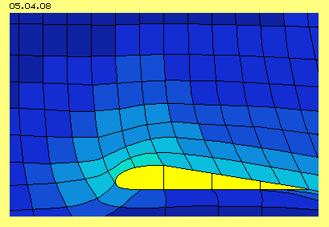
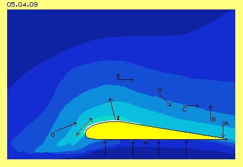

| Alfred Evert | 15.11.2006 |
05.04. Auftrieb an Tragflächen
Phänomenales Fliegen 
Auf diese Frage antwortet spontan jeder (weil oftmals gehört) : ´weil der Weg oben herum länger ist als unten herum, strömt Luft oben schneller ...´ - so wie in Bild 05.04.01 skizziert ist von A nach B. Aber auch der obere Weg von B nach A ist länger. Aber rückwärts fliegende Tragflächen ergeben keinen Auftrieb. Wohl aber produziert ein hauch-dünnes Segel (mit praktisch identischer Länge vorn wie hinten herum) zuverlässigen Vortrieb.
Wesentlich professioneller erscheint die (derzeit wohl bevorzugte) Zirkulations-Theorie: Luft umströmt die Tragfläche, hinten (C) abwärts, unten vorwärts, vorn (D) aufwärts und oben nach hinten zurück. Kontinuierlich aber kann eine Luftmasse derart kaum zirkulieren. Vor der Nase kann sie hoch steigen und hinten fließt sie sehr wohl abwärts - aber unten entlang garantiert nie mehr vorwärts.
Gestützt wird diese Theorie auf der unabdingbaren Ausbildung von Wirbeln hinter dem Flieger, wie klar erkennbar bei E und F. Diese Wirbel entstehen außen an den Flügeln und reichen weit achteraus. Es wird unterstellt, dass alle Wirbelfäden in sich geschlossen sein müssen, also müsste dieser Wirbel vom Ende des Flügels her um die ganze Tragfläche herum existieren, bis zum Rumpf reichen und am anderen Flügel entsprechend, also einen lang gestreckten Wirbelring darstellen. Wirbel müssen aber keinesfalls in sich geschlossen sein. Es wird hier eine (höchst unproduktive) Neben-Folge-Wirkung mit der Ursache des Auftriebs verwechselt.

Der alte Archimedes hat die Gesetzmäßigkeit des Auftriebs erkannt und auch sein Schiff schwimmt ´kostenlos´ auf dem Wasser (aber eben nur solang leichter als das verdrängte Medium). Der alte Newton wird bemüht mit seinem Gesetz von Aktion und Reaktion - aber es zieht nicht, weil Luft keine Balken hat. Gesetze und Formeln vieler bekannter Physiker werden bemüht, die sehr wohl Teilaspekte der Strömungs-lehre zutreffend beschreiben. Der Auftrieb existiert aber nicht aufgrund von Formeln, sondern ergibt sich aus der realen Bewegung realer Teilchen. Darum kann die Ursache des Auftriebs nur durch Beschreibung realer Prozesse erkannt werden.
Bewegung der Luft 
Noch vor Eintreffen der Tragfläche werden diese zur Nase hin ´gesaugt´, sogar von unterhalb (A). Die Lufteilchen fliegen oben herum schneller (B). Am Ende treffen sie sich aber nicht mehr mit ihren vorigen Nachbarn, sondern sind viel weiter nach rückwärts (D) verlagert.
Die Luftteilchen an der Unterseite werden anfangs nach hinten beschleunigt (A), dann in einer schmalen Grenz-schicht nach vorn mit genommen (C), am Ende aber wieder nach hinten weg gesaugt (E). Es kommt hier kein sauberer Wirbel zustande (bestenfalls außen am Ende der Tragfläche) und schon gar keine Zirkulation.
Nachfolgend werde ich den Prozess des Auftriebs an Tragflächen noch einmal sehr detailliert beschreiben. Die durch die Luft sich vorwärts bewegende Tragfläche stellt eine ´Störung´ dar mit Konsequenzen und Nebenwirkungen. Diese haben generelle Bedeutung überall dort, wo tragflächen-ähnliche Elemente eingesetzt werden (z.B. auch in Pumpen oder Turbinen). In einzelnen Schritten sind dazu nun jeweils die Ursache und die Wirkungen darzustellen.
Auslösendes Element
Andere Werte sind hier grob in der Weise angesetzt, dass sich einfache Berechnungen ergeben. Bei D ist beispielsweise der ´Aktionsradius´ (roter Kreis) eines Luftteilchens (roter Punkt) skizziert (bzw. deren maximaler Weg binnen einer Sekunde). Die molekulare Geschwindigkeit dieser Teilchen ist rund 450 m/s (VM = 450). Teilchen fliegen nicht nur gerade aus, sondern treffen sich im Durchschnitt jeweils diagonal, z.B. wenn sie Schall transportieren. Darum ist zunächst als Vorwärts-Bewegung eine Zickzack-Linie und eine mittlere Bewegungsmöglichkeit mit Schallgeschwindigkeit von rund 300 m/s (VS = 300) unterstellt. Die Höhe H von 0.3 m würde darum eine Millisekunde beanspruchen (TH = 1 MS).
Die Geschwindigkeit der Tragfläche in Längsrichtung wird mit halber Schallgeschwindigkeit unterstellt, also rund 150 m/s (VL = 150). Zur Überbrückung der Länge von 1.8 m sind somit 12 Millisekunden erforderlich (TL = 12 MS).
Ausdünnung vertikal 
Über der Tragfläche entsteht damit ein Bereich geringerer Dichte. Gleiche Anzahl Partikel in größerem Volumen bedeutet zugleich weniger Druck. Anstelle eines ´normalen´ atmosphärischen Drucks mit 1000 Millibar (NP = 1000) ergäben sich hinten über der Tragfläche ein geringerer Druck, rechnerisch also ´Tiefdruck´ von nur noch 917 Millibar (TP = 917).
Im früheren Kapitel 05.02. ´Drei Mal Sog-Effekt´ wurde bei Bild 05.02.02 dieser Prozess beschrieben, wobei dort Bewegung in horizontaler Richtung in eine relative Leere hinein betrachtet wurde (während hier der analoge Prozess in vertikaler Richtung abläuft). Im Prinzip fällt der erste Partikel in die Leere (hier an die nach unten ausweichende Trägflächen-Oberseite) und kommt verspätet zurück zur Kollision mit dem nächsten Partikel. Nach jeweils ´zwei Zügen´ rückt ein Partikel nach, so dass sich der ´Sogbereich´ nach oben ausweitet.
Die Aufwärts- und Abwärtsbewegungen erfolgen nicht nur in der Senkrechten, sondern per Zickzack, also mit Schallgeschwindigkeit. Nach je zwei Bewegungen rückt die ´Information´ (mehr Leere) nach oben, d.h. mit halber Schallgeschwindigkeit wandert die Ausdünnung der Dichte bzw. der geringere Druck nach oben (VP = 150). Da hier auch die Flug-Geschwindigkeit (VL) mit halber Schallgeschwindigkeit bzw. 150 m/s unterstellt ist, wandert die Grenze der Ausdünnung diagonal nach hinten-oben. Dieser Bereich geringerer Dichte ist hier rot hervor gehoben.
Wind horizontal
Wenn ein Partikel an der Grenze zum ausgedünnten Bereich zufällig nach rechts gestoßen wird, kann er gleichfalls länger fliegen bis zur nächsten Kollision (z.B. bei G), entsprechend um ein Sechstel weiter. Solche Partikel kehren verspätet zur erneuten Kollision (z.B. bei H) zurück, so dass alle Orte von Kollisionen (z.B. bei I) entsprechend nach rechts verlagert werden.

In der Moment-Aufnahme dieses Bildes wird bei A die Verdünnung ausgelöst, die im weiteren Verlauf aber mit dem Flugzeug nach links wandert, so dass der aktuell bei A befindliche Partikel ab sofort tatsächlich in die achterliche Leere hinein fallen wird.
Horizontale Bewegungen laufen unter gleichen Bedingungen ab wie vorige vertikale Bewegungen. Hier ist darum die Linie F-K gegenüber der Senkrechten gleich angewinkelt wie die Tragflächen-Oberseite zur Waagerechten (Winkel A-C-B ist gleich Winkel K-F-C). Dieses vertikale Dreieck ist um ein Sechstel (um H = 0.3) länger, so dass die Distanz C-K auch etwas länger als die Höhe der Tragfläche ist.
Um diese 0.35 m wandert der Partikel bei A nach rechts binnen dieser 12 Millisekunden. Die Geschwindigkeit dieser Bewegung ist etwa 0.03 m je Millisekunde bzw. 30 m/s (VW = 30). Aufgrund ´Sogwirkung´ ergibt sich also direkt über dem abfallenden Teil der Tragfläche ein Wind von rund 100 km/h. Selbst wenn bei Punkt A kein Wind gegeben ist (dortiges VW = 0), entsteht eine Strömung gegen die Bewegung der Tragfläche, der bei ihrem Ende einem beachtlichen Sturm entspricht.
In diesem Bild ist bei M der ´Aktionsradius´ eines ´ruhenden´ Partikels skizziert (z.B. weit vor der Tragfläche), welcher bis zur nächsten Kollision eine Distanz von 0.3 Längeneinheiten aufweist (KD = 0.3, entsprechend dem hier dargestellten Raster). Bei N ist der entsprechende Aktionsradius eines Partikel im ausgedünnten Bereich dargestellt, welche nach unten und hinten (rote Sichel) ausgeweitet ist, indem dorthin die Distanz bis zur nächsten Kollision 0.35 Einheiten entspricht (KD = 0.35).
Diese Darstellung ist vergleichbar zu den früher eingeführten ´Bewegungsmuster bzw. -typen´ für ruhende Partikel und für Partikel in unterschiedlich schnellen Strömungen. Analog dazu wäre der Partikel in normaler Umgebung als Bewegungstyp O zu kennzeichnen (nach Kollision befindet er sich irgendwo auf einer Position des runden Kreises). Ein Partikel hinten über der Tragfläche wäre als Typ P zu kennzeichnen (nach Kollision befindet er sich irgendwo auf dieser Kurve, die nach rechts-unten ein Sechstel weiter reicht).
Tatsächlich Wind
In Bild 05.04.06 links ist diese sekundäre Ausdünnung bis zu einer Linie senkrecht über dem Scheitelpunkt der Tragfläche (A) dunkelrot markiert. Für sechs Luftschichten sind hier Geschwindigkeiten des jeweiligen Windes (VW) eingezeichnet, wobei sie als einfacher Durchschnitt ihres Weges vor und nach der Grenzlinie grob ermittelt sind. Es ergeben sich damit von oben nach unten zunehmend schnellere Strömungen von z.B. 3, 7, 12, 18, 24 bzw. 30 m/s.

Die horizontale Bewegung stellt dagegen echten Wind dar, indem die Teilchen nach hinten auswandern. Sie werden nicht an einem bestimmten Punkt (wie voriger Oberfläche) reflektiert, sondern kollidieren möglicherweise erst viel später. Möglicherweise verschwinden einzelne Partikel auch ganz aus ihrem Herkunftsbereich, weil weit achteraus noch immer relative Leere gegeben ist bzw. dieser Wind noch lange weiter läuft. Es sei auch daran erinnert, dass nicht nur einzelne Partikel, sondern ganze Pulks in unabdingbar gegebene ´leere Blasen´ fallen (siehe oben genanntes Kapitel).
Diese horizontale Strömungskomponente endet also keinesfalls über der Hinterkante des Flügels und sie setzt vorn auch nicht erst an obiger Grenzlinie ein. Die Ausdünnung nach vorn wird bei diesem ´echten Wind´ auch nicht nur mit halber Schallgeschwindigkeit (wie bei der vertikalen Ausdünnung) statt finden. Diese ´Information´ (Kollisionspartner wandern achteraus) ist vielmehr augenblicklich gegeben für jeden zufällig nach hinten gestoßenen Partikel, d.h. wandert mit Schallgeschwindigkeit nach vorn.
In diesem Bild rechts sind die Geschwindigkeiten der Luftschichten als Wanderungsbewegung von Partikeln dargestellt, welche ursprünglich senkrecht übereinander benachbart waren. Diese Darstellung entspricht also der schwarzen Linie bzw. Kurven obiger Animation bzw. in Bild 05.04.03. Von oben nach unten ist der Wind schneller und die Partikel wandern über der sich nach links bewegenden Tragfläche achteraus, in den unteren Bereichen wesentlich schneller als in oberen Schichten.
Sog schneller Bewegung
Dieser Effekt tritt überall im gesamten Volumen dieser Strömungen auf, also auch in diesem Bereich oberhalb der Tragfläche. Vorige Rechnereien hinsichtlich Druck und Geschwindigkeit mögen formal richtig sein, können aber niemals die realen Vorgänge exakt widerspiegeln. Durch den bekannten und höchst wirkungsvollen ´Sog-Effekt schneller Strömungen´ (siehe Hurrikan usw.) wird die Strömung entlang der Oberfläche wesentlich schneller und auch die Dichteverteilung wird sehr viel ausgeprägter sein.
Wirbel-Schleppe
Umgekehrt ´zieht´ diese Abwärtsbewegung weiterhin Luft von oben nach, wobei allerdings zugleich vorige Ausdünnung nach oben weiter wandert. Zufluss kann also nur aus relativ ruhender Luft seitlich-einwärts erfolgen, wobei alle Strömungen zugleich immer nach rückwärts fließen. Damit werden beidseitig diese Wirbelwalzen gebildet, die eindrucksvoll in obigem Bild 05.04.01 bei E und F zu sehen sind.
Auch diese Wirbel grenzen rundum an langsamere Bewegung, womit auch dort wieder die Sogwirkung der jeweils schnelleren Strömung auftritt. Diese Wirbelschleppen bilden praktisch zwei gegenläufige Tornados inklusiv deren Selbstbeschleunigung. Ein großes Flugzeug verwirbelt damit den Luftraum für Minuten - aber dieser Nebeneffekt ist nachfolgende, hinderliche Erscheinung und keinesfalls dem Auftrieb vorausgehende Ursache.
Auftrieb entsteht tatsächlich an diesem hinteren Teil der Tragfläche, indem unten nahezu normaler atmosphärischer Druck anliegt, während oben Wind über die Oberfläche schräg abwärts streicht. Dessen statischer Druck ist sehr viel geringer und die Druckdifferenz wirkt als aufwärts gerichtete Kraft. Allerdings erfolgt der Auftrieb in wesentlichem Umfang am vorderen Teil der Tragfläche, so dass die dortigen Prozesse nun zu diskutieren sind.
Vorauseilende Information 
Es wurde oben zurecht unterstellt, dass die Ausbreitung der Ausdünnung (bzw. oben auch in übertragenem Sinn als ´Information´ bezeichnet) nach vorn mit Schallgeschwindigkeit erfolgt. Als eindeutiger Beweis dafür kann geltend gemacht werden, dass Auftrieb bei Flugzeugen mit Überschallgeschwindigkeit nicht mehr auftritt. Jedes Tragflächen-Profil hat eine spezielle Kennlinie hinsichtlich Geschwindigkeit und Auftriebskraft. Steigende Geschwindigkeit bedeutet erhöhte Auftriebskraft, welche aber bei jeweils überhöhter Geschwindigkeit reduziert ist bzw. vollkommen verschwindet.
Ausgangspunkt der Überlegungen war, dass die primäre Auslösung des Auftriebs beim Scheitel der Tragfläche (B) beginnt und gegen Ende der Tragfläche (C) deren Wirksamkeit voll ausgebildet ist. In diesem Beispiel wurde unterstellt, dass dieses Flugzeug mit halber Schallgeschwindigkeit fliegt. Da obige ´Information´ mit Schallgeschwindigkeit durch den Raum vorwärts läuft, eilt sie mit halber Schallgeschwindigkeit dem Flieger voran. Hier wird nun unterstellt, dass sie vom primären Auslösepunkt (B) mindestns drei dieser Viertel nach vorn wirksam ist.
Aus vorigem Bild 05.04.06 wurden die Linien rechts hier noch einmal eingezeichnet. Sie stellen die ´Verzerrung´ senkrechter Nachbarn durch den ausgelösten Wind dar. Diese Kurven wurden nach vorn ´extrapoliert´, d.h. die jeweilige Differenz zur Senkrechten hin gemittelt. Allerdings ist zu beachten, dass stärkerer Wind auch stärkeren ´Sog´ (durch Verlagerung seiner Kollisions-Orte) bedeutet und damit stärkere Auswirkung für Partikel weiter vorn hat. Je größer die Ordnung und Geschwindigkeit einer Strömung ist, desto weniger negative Kollisionen treten auf und desto widerstandsloser werden nachfolgende Partikel folgen können.
Sog durch Leere und schnelle Strömung

Wie bei den unter-schiedlich schnellen Strömungen im hinteren Bereich der Tragfläche wirkt die starke Strömung entlang des vorderen Teils wiederum als starker ´Sog´ hinsichtlich benachbarter Strömung. Zudem weist dort die Oberfläche eine Krümmung auf und entlang dieser ist der Sog-Effekt besonders wirksam.
Stromfäden sind immer gekrümmt hin zur schnelleren Strömung und auch diese wird gekrümmt - und kann nun entsprechend widerstandslos um diese Kurve herum fliegen (wie im Kapitel 05.02 ´Sog´ bei Bild 05.02.05 detailliert beschrieben). Aus Sicht der von unten kommenden Strömung tritt diese Oberfläche ständig weiter zurück (analog bzw. bis hinter dem Scheitelpunkt) und es entsteht somit zusätzlich relative Leere mit entsprechender Sogwirkung. Die Krümmung des Profils in diesem Bereich ist kritisch hinsichtlich des Auftriebs und muss darum auf die gewünschte Flug-Geschwindigkeit abgestimmt sein.
Ordnungsfaktor Wand
Im freien Raum können alle lokalen Bereiche relativer Leere von allen Seiten her aufgefüllt werden. Wie im grundlegenden Kapitel 05.02. bei Bild 05.02.05 bereits ausführlich beschrieben wurde, kann aber eine Leere entlang einer Wand nur von außen oder entlang der Wand aufgefüllt werden. Das trifft hier entlang der gesamten Oberfläche zu: hinter dem Scheitelpunkt tritt relative Leere auf, die sich fortpflanzt als starker Wind weiter nach vorn. Für jeden nachfolgenden Partikel stellt dessen schnelles Vorauseilen ebenfalls relative Leere dar - und eben diese kann niemals von der Wand her aufgefüllt werden, bleibt also fortwährend erhalten.
Minimaler und maximaler statischer Druck
Auf der Unterseite drückt im Prinzip der gesamte atmosphärische Druck. Allerdings ist auch dort die Luft nicht vollkommen ruhig, sondern wird etwas angesaugt, dann mitgerissen durch Haftung und hinten hinaus wieder etwas beschleunigt. Es ist also auch von unten nicht der komplette atmosphärische Druck durchgängig wirksam. Die Differenz des statischen Drucks zwischen Ober- und Unterseite der Tragfläche ergibt die Auftriebskraft.
Berechnung des Auftriebs
Alle übliche Formeln werden aber der Tatsache nicht gerecht, dass an der Grenze zur Schallgeschwindigkeit keinerlei Auftrieb mehr gegeben ist. Ich möchte darum einen Ansatz für Berechnungen anbieten, welche aus den Ursachen des Auftriebs abgeleitet ist (mit Bezug auf obige Bildern 05.04.04 und 05.04.05).
Hinter dem Scheitelpunkt (A) des Profils kann Luft nach unten fallen auf einer Strecke H während der Zeit TL (bis die Tragfläche den Weg L nach vorn gewandert ist). Der waagrechte Wind entspricht dieser Abwärtsgeschwindigkeit plus einem Zuschlag in Relation H / L (obiges Sechstel), so dass sich in diesem Beispiel ein Wind von 30 m/s im Raum ergibt.
Dieser Wind füllt die hinten kontinuierlich auftretende Leere (teilweise) auf über die Distanz L hinweg. Per Sog wird von vorn die entsprechende Masse Luft angesaugt, was allerdings über die wesentlich kürzere Distanz vor dem Scheitelpunkt erfolgen muss. Der Vorderteil des Profils wurde hier mit einem Drittel des hinteren Teils L angenommen, also wird vorn ein Wind dreifacher Stärke herrschen, hier also von 90 m/s bzw. rund 300 km/h. Für die Oberfläche insgesamt ergäbe sich damit eine Durchschnittsgeschwindigkeit von 45 m/s.
Nun kann (mit Bernoulli) der dynamische Druck errechnet werden, an der Unterseite mit der Flug-Geschwindigkeit von 150 m/s und an der Oberseite zuzüglich dieses Windes, also mit 195 m/s. Anstatt dieses Faktors von 195 / 150 = 1.3 wird Geschwindigkeit im Quadrat gerechnet, also ergäbe sich ein Faktor von 38.025 / 22.500 = 1.7 für den dynamischen Druck. Umgekehrt dazu verhält sich der verbleibende statische Druck, also mit Faktor von etwa 1 / 1.7 = 0.6 bzw. einer Differenz von 0.4 zugunsten der Oberseite.
Bei atmosphärischem Druck von einer Tonne je Quadratmeter würde sich eine Auftriebskraft von rund 400 kg/qm Tragfläche ergeben. Obige Tragfläche ist 2.4 m lang und hätte bei z.B. 20 m Spannweite eine Fläche von 48 qm, somit Auftrieb von 19.600 kg - was zu überprüfen wäre (durch andere, weil mir Rechnen keinen Spaß macht). Es wäre z.B. interessant diese Überlegungen zu prüfen auch hinsichtlich des Ca-Wertes bei unterschiedlichem Anstellwinkel: der Scheitelpunkt wandert dabei nach vorn, somit die Relation von vorderem zu hinterem Teil des Profils sowie die Relation von H zu L.
Schallgrenze
Wenn dieses Flugzeug schneller fliegen soll, müsste die Relation von Höhe zu Länge reduziert sein, d.h. ein flacheres Profil eingesetzt werden. Die an der Nase erforderliche Geschwindigkeit muss aber schon weiter vorn aufgebaut werden. Die ´Information´ des Windes bzw. seiner Sogwirkung eilt aber nur mit Schallgeschwindigkeit durch den Raum. Spätestens wenn das Flugzeug selbst mit dieser Geschwindigkeit fliegt, kann kein ausweichender Wind mehr aufgebaut werden.
Das Flugzeug schiebt dann plötzlich eine ´Bugwelle´ dichter Luft vor sich her, d.h. beschleunigt umgebende Luft nach vorn. Natürlich löst sich dieser Bereich hoher Dichte wieder auf, wobei die vorwärts gestoßene Luft wieder etwas langsamer wird. Es kommen Turbulenz auf. Es kann sich keine geordnete Windströmung entlang der Oberfläche mehr ausbilden, so dass die Voraussetzung für Auftrieb nicht mehr gegeben ist.
Neue Theorie des Auftriebs
Vorweg ist anzumerken, dass ´Sog´ niemals ´ziehend oder anziehend´ wirkt, sondern zufällig dorthin gestoßenen Partikeln lediglich die Möglichkeit bietet, längere Distanz bis zur nächsten Kollision zu fliegen. Darüber hinaus können Partikel dorthin dichter beisammen und in besser geordneter Struktur strömen. In diesem Sinne ist nachfolgend der Begriff ´Sog´ zu verstehen.

B. Umgekehrt wird damit der Raum über dieser originären Leere ausgedünnt, indem sich die Orte aller Kollisionen nach unten verlagern, wobei die Wege zwischen Kollisionen länger werden. Der Bereich geringerer Dichte weitet sich nach oben mit halber Schallgeschwindigkeit aus.
C. In diesen ausgedünnten Bereich fallen Partikel auch in horizontaler Richtung, wobei die Wege zwischen Kollisionen entsprechend länger werden. Diese Bewegung nach hinten wird durch keine Oberfläche begrenzt, so dass Wanderbewegung eintritt, d.h. echte Strömung entsteht. Da die Ausdünnung von unten nach oben wächst, kann unten dieser Wind früher einsetzen und sich stärker entwickeln als in den Luftschichten oberhalb davon.
D. In benachbarten Strömungen unterschiedlicher Geschwindigkeit wirken jeweils schnellere Strömungen wie Sog auf benachbarte, so dass Partikel aus langsameren Strömungen widerstandslos in die schnellere Strömung aufgenommen werden. Die unteren Strömungen werden damit beschleunigt und dichter.
E. Diese achterlich auswandernden Winde stellen nach vorn ebenfalls Sog dar bzw. hinterlassen relative Leere, welche sich mit Schallgeschwindigkeit nach vorn ausbreitet. Diese Leere kann entlang der Oberfläche nur von oben und besonders von vorn aufgefüllt werden. Obwohl Wind auch weit über der Tragfläche herrscht, ist die Strömung entlang der Oberfläche sehr viel stärker ausgeprägt.
F. Die sehr starke Strömung entlang der vorderen Oberseite erzeugt entsprechend starke Sogwirkung bis unterhalb der Nase. Die zur Auffüllung der achterlichen Leere nach hinten-unten abfließende Luftmasse muss vorn auf viel kürzerer Distanz aufwärts ´gesaugt´ werden.
G. Bereiche weiter vorn weisen zunächst geringere Geschwindigkeiten auf, die wiederum beugend, verdichtend und beschleunigend auf die schnelle Strömung an der Oberfläche wirken. Entlang der Krümmung über und hinter der Nase kann die gebeugte Strömung widerstandslos fließen.
H. An der Unterseite verbleibt die Luft nicht vollkommen ruhend, im wesentlichen drückt sie aber mit atmosphärischem Druck gegen die Unterseite.
I. An der Oberseite ist entsprechend zur Strömung der statische Druck auf die Oberfläche reduziert. Die Differenz beider statischen Drucke entspricht der Auftriebskraft, welche insgesamt aufwärts und etwas nach vorn gerichtet ist. Die ´Produktion´ dieses Auftriebs kostet keinen entsprechenden Energie-Einsatz, weil die ´Abschirmung´ der Oberseite gegen atmosphärischen Druck ausschließlich auf Sog basiert, der dortige Wind automatisch entsteht, indem Partikel rein zufällig in die jeweilige relative Leere fallen.
Der Leser möge beurteilen, ob meine Theorie des Auftriebs logische und verständliche Erklärung liefert für Ursache und Wirkungen dieses ´Phänomens´ - und darf sie dazu gern vergleichen mit anderen Theorien.
Alle gängige Theorien können nicht wirklich das Phänomen erklären, dass die stärkste Auftriebskraft (G) ausgerechnet dort auftritt, wo auftreffende Partikel (H) den Flieger am härtesten nach unten drücken müssten, also mit exakt entgegen gesetzten Vektoren. Das - meist nicht ausgesprochene - Kernproblem ist, dass dieser Auftrieb praktisch nichts kostet. Das Flugzeug braucht nur Energie zur Überwindung des Widerstands für die Vorwärtsbewegung, das Anheben gegen die Schwerkraft kostet keinen (oder nur minimalen) Energie-Einsatz (vollkommen entgegen gesetzt zur Lehre von Energie-Konstanz).
In Bild 05.04.04 ist schematisch der Querschnitt durch eine Tragfläche (gelb) dargestellt. Von Interesse ist zunächst der hintere Teil, welcher im Prinzip ein Dreieck (A-B-C) darstellt. Als Höhe dieses Dreiecks sind 0.3 m (H = 0.3) und als Länge 1.8 m (L = 1.8) unterstellt. Das Verhältnis von Länge zu Höhe ist hier also 6:1. Während sich die Tragfläche um diese Länge (B-C) nach links im Raum bewegt, können Luftteilchen diese Höhendifferenz nach unten fallen. Das ist auslösendes Moment aller weiteren Prozesse.
In diesem Bereich relativer Leere erfolgen aber nicht nur vertikale Bewegungen mit längerer Distanz zwischen Kollisionen, auch die horizontale Bewegungsmöglichkeiten ändern sich, wie in Bild 05.04.05 schematisch dargestellt ist.
An der diagonalen Grenzlinie des ausgedünnten Bereichs müssten also Partikel augenblicklich von 0 auf 100 km/h beschleunigen. Das ist kein Problem, weil alle Partikel bei frontaler Kollision von 0 auf über Schallgeschwindigkeit ´beschleunigen´ (z.B. bei normaler molekularer Bewegung von 470 m/s * 3600 s auf 1692 km/h). Dieser Wind setzt aber nicht augenblicklich erst an der Grenzlinie ein, weil jeder nach achtern davon fliegender Partikel relative Leere hinterlässt (in welche nachfolgend Partikel wiederum fallen können). Diese horizontale Bewegung ergibt eine fortschreitende Ausdünnung dieses Bereichs, auch weit vor der Nase der Tragfläche.
Zwischen benachbarten Strömungen unterschiedlicher Geschwindigkeit existiert Sogwirkung, wie ausführlich im erwähnten Kapitel 05.02. ausgeführt wurde. Zwischen den dort beteiligten Bewegungstypen (wie auch oben beim ´Aktions-Radius´ bzw. -Typ P in vorigem Bild 05.04.05) finden vorwiegend Begegnungen in Form von ´Auffahr-Kollisionen´ statt. Einerseits wird damit die jeweils schnellere Strömung zusammen gedrückt (bzw. gebeugt), andererseits fallen Partikel zufällig in schnellere Strömung hinein und werden widerstandslos aufgenommen, erhöhen deren Dichte und auch Geschwindigkeit. Diese Vorgänge finden nicht nur hinsichtlich einzelner Partikel statt, sondern aufgrund der allgemeinen Leere und ungleichen Verteilung in Gasen auch in ganzen Paketen.
An der Hinterkante der Tragfläche existiert also eine sturm-ähnliche Strömung rückwärts-abwärts. Sie trifft dort auf Luft der Tragflächen-Unterseite, die ´ruhend´ ist bzw. etwas turbulent aufgrund ihrer Haftung am Flügel. Die Strömung von oben prallt auf die untere Luftmassen und komprimiert diese. Dieser Prozess erfolgt auf beiden Seiten des Rumpfes, so dass der erhöhte Druck unten nur seitlich-auswärts entspannen kann.
Der ausgedünnte Raum bzw. korrespondierend dazu die jeweiligen Windgeschwindigkeiten greifen also nicht linear voraus in den Raum, vielmehr wirkt intensive Bewegung entsprechend stärker in den Raum vor der Tragfläche hinein. Die maximale Geschwindigkeit ist direkt entlang der Tragflächen-Oberseite gegeben, darum greift ihr ´Sog´ auch vor die Nase nach unten-vorwärts. Dieser Wind ´zieht´ noch immer keine Partikel nach sich her, vielmehr bietet er immer nur nachfolgenden Partikeln Freiraum, in welchen diese rein zufällig hinein gestoßen werden - hier eben auch von vorn-unten über die Nase aufwärts.
Wiederholt habe ich auf die Funktion der Wände bei Strömungen hingewiesen. Das abfallende Ende der Tragfläche stellt relative Leere dar und wurde oben als auslösendes Moment für vertikale Ausdünnung beschrieben. Für die horizontale Bewegung ist eine entsprechende Wand nach rückwärts nicht gegeben, so dass sich wirklicher Wind mit Wanderbewegung von Partikeln ergeben kann.
Weil vorn an und über der Nase der ´Sog´ nur von vorn-unten aufgefüllt werden kann und die gebeugte Strömung widerstandslos um die gekrümmte Oberfläche fließen kann, tritt also gerade über diesem Teil der Tragflächen-Oberseite maximale Geschwindigkeit auf. Nicht nur direkt an der Oberfläche, sondern auch in Luftschichten oberhalb ist dort jeweils deren schnellste Bewegung gegeben.
In diesem hellen Bereich vorn-aufwärts ist in allen Schichten darum auch jeweils der geringste Druck quer zur Strömung gegeben. Dort also liegt an der Oberfläche der geringste statische Druck an. Die Luft weicht der vorwärts fliegenden Tragfläche tatsächlich nach oben aus bzw. diese fliegt gegen geringsten Druck an.
Zur Berechnung dieser Kraft werden vielfältige Formeln verwendet. In der Zirkulationstheorie tritt z.B. ´Zirkulation´ als Faktor auf (aus der achterlichen Wirbelschleppe abgeleitet bzw. praktisch der Geschwindigkeitsdifferenz zwischen Ober- und Unterseite entsprechend). Andere Berechnungen unterstellen, dass Auftriebskraft entsprechend zur abwärts gedrückten Luftmasse sei (eine rein mechanische Vorstellung, welche die Wirkung von Sog völlig unbeachtet lässt). Meist werden Cw- und Ca-Werte als Faktoren eingesetzt (die aber für jedes Profil und jeden Anstellwinkel empirisch zu ermitteln sind). Meist tritt Dichte des Mediums als Faktor auf (wo vermutlich eher Druck maßgeblich ist). Geschwindigkeit wird stets im Quadrat angesetzt (möglicherweise eine zu starke Vereinfachung). Unstrittig dürfte nur die wirksame Fläche als Faktor des Gesamtauftriebs sein.
Bei diesem Beispiel wurde vorn ein Wind von 90 m/s pauschal ermittelt. Der vordere Teil ist 0.3 m hoch und 0.6 m lang, das Flugzeug fliegt 150 m/s schnell, so dass die Luft schon durchschnittlich mit 75 m/s nach oben ausweichen muss. Nur wenn tatsächlich solch hohe Windgeschwindigkeiten an der Nase zustande kommen, können die minimalen Cw-Wert von Tragflächen auftreten (ein Rohr von 3 cm Durchmesser bzw. 7 cm^2 weist mehr Widerstand auf als dieses 2.4 mal 0.3 m große Profil mit etwa 3.200 cm^2).
In Bild 05.04.09 sind vorige Wind- bzw. Druckbereiche noch einmal dargestellt, nun aber sind die farblichen Abstufungen geglättet. Die Bewegungsabläufe und Effekte sind mit Pfeilen markiert. Diese neue Theorie des Auftriebs soll hier noch einmal kurz zusammen gefasst werden, in verschiedenen Schritten von der Ursache bis zur letztlichen Wirkung.
PS. Hinsichtlich Berechnungen siehe auch Kapitel 05.12. ´A380 und Auftrieb´.
Datei www.evert.de/ap0504.pdf ist eine Druck-Version.
05.12. A380 und Auftrieb
Aero-Technologie